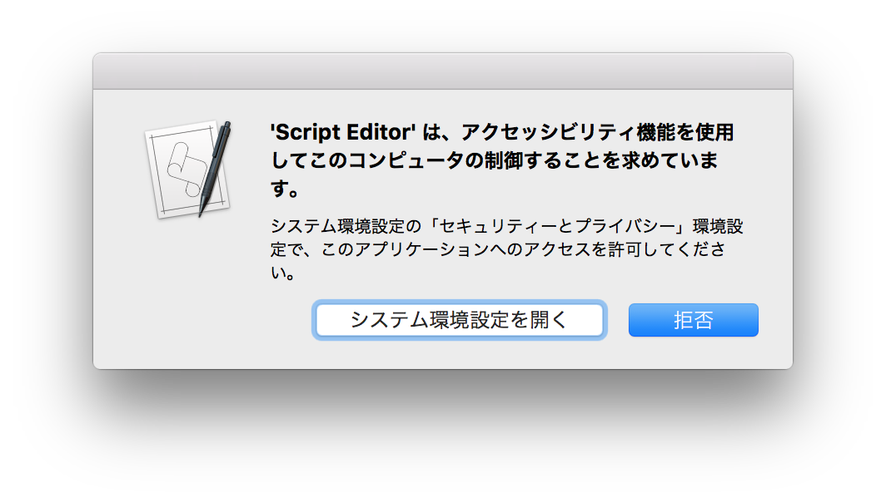

GUIScriptingChecker Reference
- Version : 1.4
- Author : Tetsuro KURITA scriptfactory@mac.com
- Requirements : Mac OS X 10.5 or later
- Home page || ChangeLog || Repository
GUIScriptingChecker is an AppleScript library to check availability of "GUI Scripting". Also if "GUI Scripting" is not enabled, GUIScriptingChecker can guide a user to enable "GUI Scripting" with displaying proper messages.
The default status of "GUI Scripting" is OFF. Therefore you should check availability of "GUI Scriting" at the beginning of the script which depends on "GUI Scripting".
"GUIScriptingChecker" take on boring routine task, and display dialogs to guide users if "GUI Scripting" is not enabled.
In OS X 10.9 or later, the following dialog will be displayed.
Clicking "Open System Preferences" will openthe Accessibility section in the Security & Privacy preference pane in System Preferences.
In OS X 10.8 or before, the following dialog will be displayed.

If a user pushes "Enable GUI Scripting" button, "GUIScriptingChecker" try to enable "GUI Scripting". If "GUI Scripting" is enabled through authorization process, the script can contiue to work.
Basic Usage
Localizing Messages
Messages are displayed when "GUI Scripting" is OFF can be localized by giving a delegate to "GUIScriptingChecker" as follows.

Basic Methods
make
Make a copy of an instance of GUIScriptingChcker
do
Check availability of "GUI Scripting"
set_delegate
set a delegate script
localize_messages
Obtain message texts from "Localizable.strings" in the resource folder in the current bundle.
Delegate Methods
A delegate script is used for localizing messages in a dialog shown when GUI Scripting is disabled.
ok_button
Return a label text for "OK" button.
cancel_button
Return a label text for "Cancel" button.
title_message
Return a title text for a dialog.
detail_message
Return a detail message for a dialog.